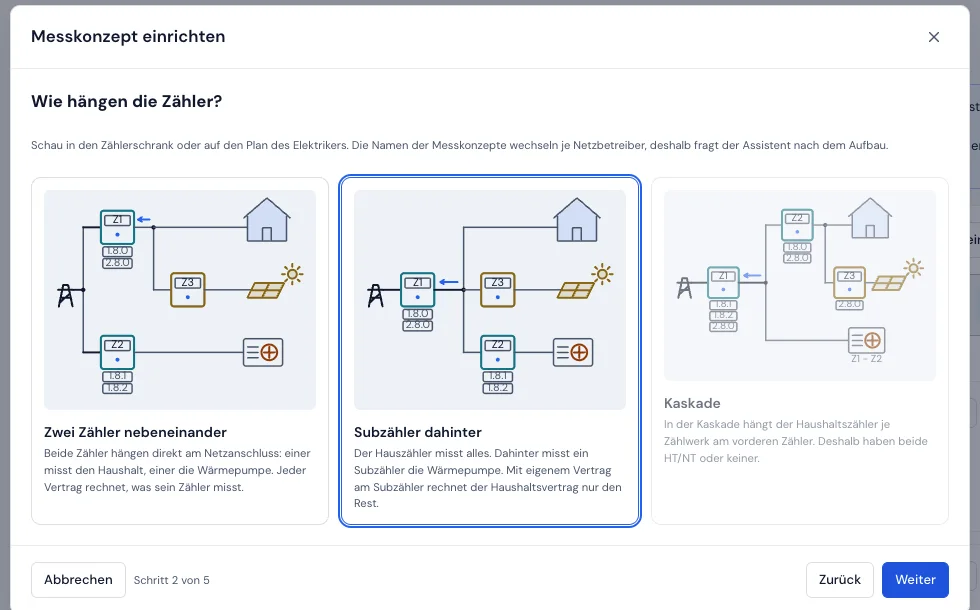
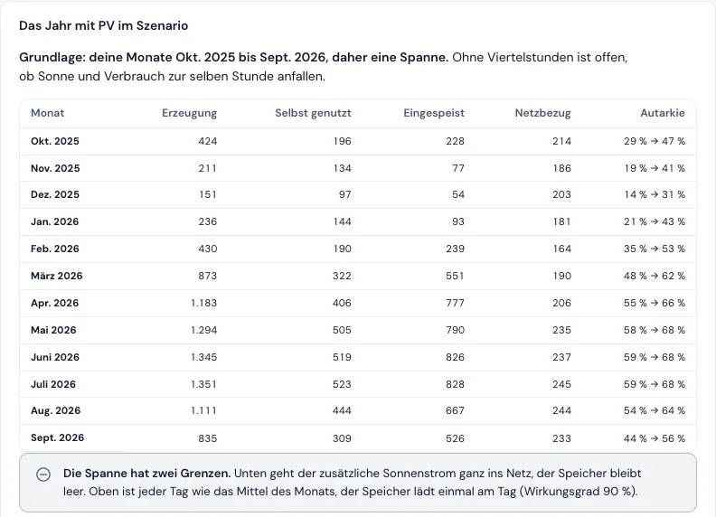

Haus mit Wärmepumpe, PV, Speicher und E-Auto
Was bringt dir die Sonne, und was kostet die Wärmepumpe? Der Energietracker rechnet nach, was Home Assistant, evcc und dein Speicher tun. Er steuert nichts.
- Jeder Vertrag zahlt nur seinen Teil. Der Assistent für das Messkonzept kennt Subzähler und Kaskade, auch mit Wärmepumpe und HT/NT.
- Viertelstunden statt Monatssummen, aus Home Assistant oder aus Dateien des Netzbetreibers. Die Seite Flexibilität rechnet nach, ob Verschieben etwas gebracht hat.
- PV und Wärmepumpe in Zahlen: Eigenverbrauch, Autarkie, Speicher mit Verlusten, Amortisation und die Jahresarbeitszahl.
- Was wäre wenn? Größere Anlage, Speicher, mehr Eigenverbrauch: Die Werkstatt rechnet es aus deinem gemessenen Jahr.
- Das E-Auto: Ladevorgänge aus evcc und ein Ladestrom-Nachweis für den Dienstwagen.
Noch nicht da: Die Prognose für Wärmepumpe, PV und Speicher nach dem Wetter kommt mit v3.13, geplant für den 17.11.2026. Bis dahin nimmt die Werkstatt das zuletzt gemessene Jahr, ohne ein Jahr Viertelstunden als Spanne.
Strom im BeispielhaushaltAnwendungsfälle im HandbuchFlexibilität bewerten



